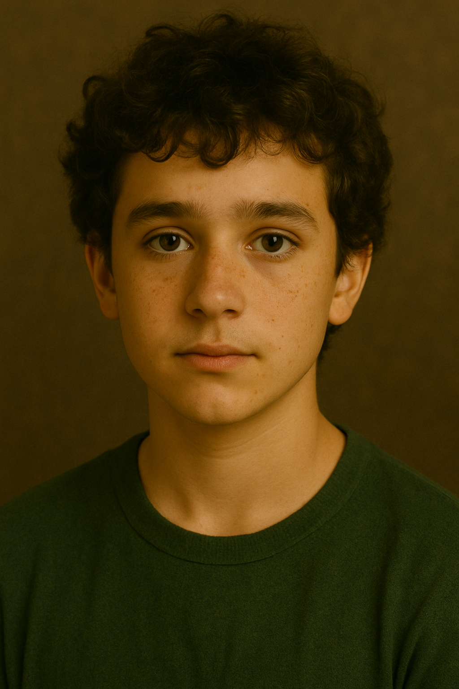

Jade Peterson
Issue d’une famille amérindienne, Jade a grandi dans une tradition où l’on apprend à observer, à chercher, à comprendre. Cette éducation d’exploratrice de l’esprit et du monde a forgé en elle une intelligence vive, une curiosité profonde, et une vision unique des choses. Elle n’avance jamais sans questionner, et rien n’est pour elle figé : chaque détail, chaque créature, chaque souffle de l’Arbre est porteur de sens.
Depuis ses jeunes années à l’Arbre, Jade a partagé sa vie avec Loucas, dont elle est tombée amoureuse très tôt. Ensemble, ils ont fondé une famille, une lignée aujourd’hui essentielle au cœur même de l’Arbre. Car autour de Jade gravitent des secrets lourds de sens, des fragments de vérité dont l’importance ne cesse de grandir. Elle garde toujours sur elle un pendentif qu’elle ne quitte jamais, comme un talisman, ou peut-être comme une clé.
Mère aimante, Jade ne tombe pourtant jamais dans la surprotection. Elle sait que le monde peut se montrer dur, que les pouvoirs sont une force difficile à maîtriser, et que ses enfants devront tôt ou tard affronter cette réalité. Plutôt que de les en préserver, elle choisit de les y confronter, convaincue que c’est dans l’expérience, parfois rude, que naît la véritable maîtrise.
Apprendre et comprendre sont pour elle les piliers d’une réussite durable. Jade incarne la transmission, mais une transmission exigeante, qui refuse la facilité. Ceux qui croisent son chemin la décrivent comme une femme forte, enracinée dans ses convictions, mais aussi auréolée de mystère. Car si Jade Paterson éclaire le présent, nul ne sait encore toute l’étendue des secrets qu’elle porte en elle… et qui, peut-être, façonneront l’avenir de l’Arbre.
✦ Famille



Famille Peterson
Description
Dans l’Arbre, certains noms se murmurent plus qu’ils ne s’annoncent. Celui des Peterson en fait partie. Jade et Loucas n’ont jamais été de ceux qui se fondent dans la masse. Leur couple, improbable pour beaucoup, a toujours semblé guidé par quelque chose de plus fort qu’eux : une volonté de tenir ensemble malgré leurs différences, et peut-être malgré les épreuves. On dit qu’ils se complètent au point de n’être qu’un seul équilibre : elle, dure et secrète ; lui, tendre et protecteur. De leur union sont nés trois enfants à la même seconde : les triplés. Ensemble, ils forment une fratrie soudée, dont les liens dépassent l’évidence du sang. Chacun emprunte son propre chemin, mais aucun n’avance jamais vraiment seul. Les Peterson suscitent autant la curiosité que la méfiance. Trop unis, trop marqués par un destin qui semble déjà écrit, trop porteurs de secrets pour ne pas attirer les regards. Car si cette famille paraît solide, aimante et entière, une ombre persiste.
Membres de la famille
Loucas Peterson
Loucas a grandi dans la précarité, au sein d’une famille nombreuse. Quatre frères et sœurs, une enfance simple, parfois rude, mais soudée. Tous appartiennent au Clan du Lien animal : dans cette fratrie, le lien avec les créatures a toujours fait partie de la vie quotidienne.
De cette enfance, Loucas a gardé une nature humble et généreuse. C’est un homme attentif, profondément attaché à sa famille, qui préfère les gestes simples aux grands discours. Sociable, chaleureux, il a toujours cherché à rendre le quotidien plus doux pour ceux qui l’entourent.
Avec ses enfants, il se montre affectueux, parfois trop. Un vrai papa poule, comme aime le lui rappeler Jade. Là où elle pousse leurs enfants à se confronter au monde et à ses duretés, Loucas a tendance à vouloir les protéger à l’excès, quitte à s’inquiéter pour eux plus qu’il ne le faudrait.
Pourtant, derrière cette douceur se cache un don affirmé. Loucas est un maître accompli du Lien animal, capable de tisser des relations profondes avec les créatures. Il n’en tire aucune fierté particulière : pour lui, c’est simplement une manière d’être, une façon de construire de la confiance là où d’autres ne voient que des rapports de force.
Lors de son apprentissage à la Bulle, il a rencontré Jade. Dès le premier jour, il a été attiré par elle, même s’il n’aurait jamais cru qu’elle puisse un jour s’intéresser à lui. Leur union, bâtie sur leurs différences, est aujourd’hui l’une des plus solides de l’Arbre. Jade apporte la rigueur, Loucas la tendresse : ensemble, ils forment un équilibre rare.
Mais cette solidité a un prix. Car derrière leur douceur et leur sens de la famille, une question demeure, silencieuse et troublante : jusqu’où ces deux-là ont-ils été capables d’aller, main dans la main ?
Léo Peterson
Léo est le plus calme de la fratrie, parfois en retrait du lien fusionnel entre Carlos et Éléa. Pourtant, il reste sans doute le plus respecté des trois.
C’est un esprit vif, toujours en train d’analyser, d’observer, de chercher à comprendre. Rien n’est laissé au hasard : Léo a besoin de tout contrôler, d’anticiper chaque détail. Mais là réside aussi sa plus grande faiblesse… car tout ne peut pas être maîtrisé, et cette idée lui est difficile à accepter.
Très intelligent, doté d’une grande capacité d’adaptation et d’une prédisposition naturelle à l’apprentissage de son pouvoir, il pourrait devenir redoutablement puissant. Mais l’avenir lui réserve un défi de taille : apprendre que ses plans, aussi parfaits soient-ils, ne sont pas toujours les bons. Et gare à lui s’il refuse l’imprévu, car c’est souvent là que se joue le véritable destin.
Carlos Peterson
Membre du Clan du Lien animal, Carlos est le casse-cou de la fratrie. Toujours prêt à foncer sans trop réfléchir, il donne l’image d’un garçon sûr de lui, intrépide et parfois même imprudent. Mais derrière cette façade téméraire se cache une réalité plus complexe : Carlos n’est pas aussi confiant qu’il le laisse croire.
Très proche de son frère Léo, il se montre encore plus protecteur envers sa sœur Éléa. Voir cette dernière se mettre en danger lui est insupportable, car au fond, une peur profonde le ronge : celle de perdre ceux qu’il aime. C’est cette peur, plus que son courage, qui le pousse souvent à agir en premier, comme pour conjurer le sort.
Carlos n’est ni le plus puissant ni le plus talentueux de sa génération. Mais ses choix — parfois risqués, parfois inattendus — révèlent autre chose : une envie farouche de réussir, de se dépasser et de prouver qu’il peut trouver sa place. Sa force ne réside peut-être pas dans la perfection de sa maîtrise, mais dans cette détermination brute qui, un jour, pourrait bien faire la différence.
Et surtout, Carlos l’a compris mieux que quiconque : un grand pouvoir ne se porte jamais seul. Il cherche toujours à bien s’entourer, convaincu qu’au final, sa plus grande force naît de ceux qui marchent à ses côtés.
Éléa Peterson
Membre du Clan de l’Ombre, Éléa est bien plus qu’une simple élève : elle est une énigme vivante. Ses pouvoirs dépassent l’entendement, défiant toutes les règles connues. Elle maîtrise non seulement les Ombres avec une puissance hors norme, mais aussi les capacités propres à tous les autres clans — un don qui inquiète autant qu’il fascine.
Dotée d’un caractère fort, toujours prête pour l’aventure, elle avance sans reculer, même face au danger. Très attachée à sa famille et à son cercle le plus proche, Éléa veille à ce que ce lien reste solide, car c’est dans cette unité qu’elle puise sa force. Derrière cette carapace intrépide, il reste un cœur tendre, capable d’une loyauté et d’une générosité désarmantes.
Elle cherche le bien, toujours. Mais un pouvoir aussi immense attire aussi des ombres plus sombres… et la ligne entre lumière et ténèbres pourrait se brouiller. Ses yeux, porteurs de mauvais souvenirs pour bien des clans, rappellent un passé trouble que certains préfèreraient oublier.
Beaucoup pensent qu’elle seule pourrait apaiser les tensions et ramener la paix entre les clans. Mais d’autres redoutent que son destin ne suive un chemin plus dangereux, capable de plonger l’Arbre dans une ère d’incertitude.
Titre